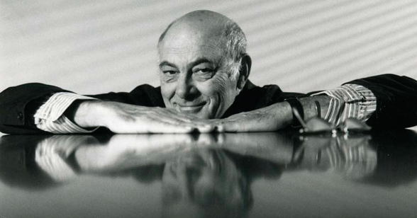
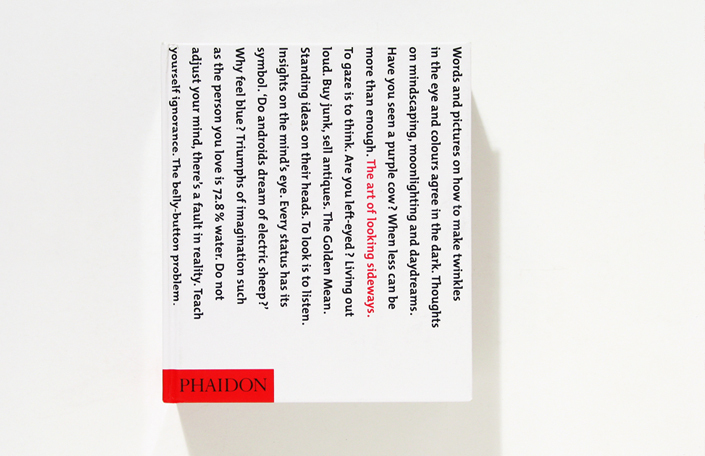
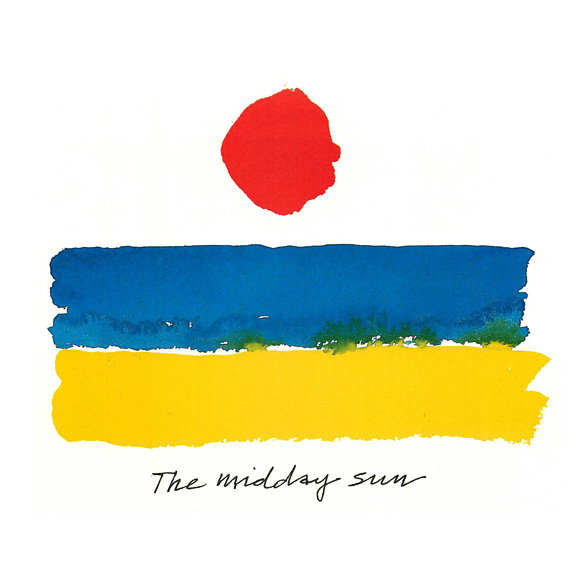
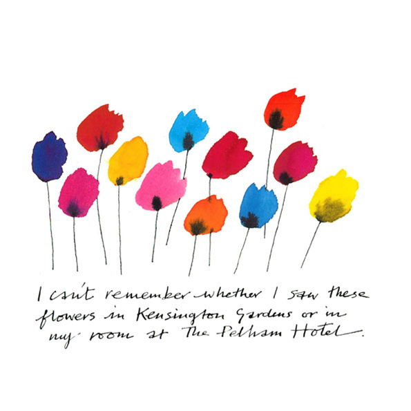
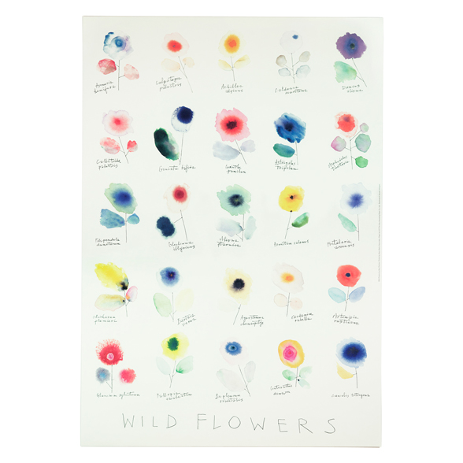
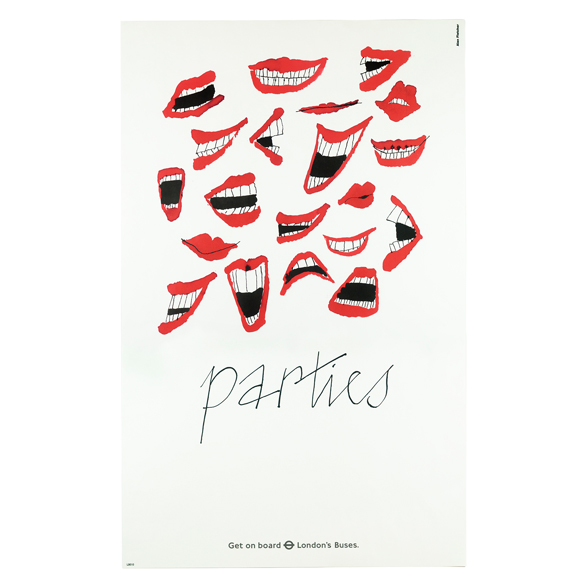

-

-
Graphic Tradition of Europe and North America to develop a spirited, witty and very personal style.

-
Born in Kenya. Fletcher moved to England at age five.
-
He studied at a lot of places:
Hammersmith School of Art
Central School of Art
Royal College of Art School
Yale College and Architect

Teamed up with Bob & Colin Forbes
designed agency and for Time & life
Pirelli Penguin Books

Design & Art Directors Association was found 1972.

-
Established Pentagram became the biggest independent design studio.
Studios are found in London, New York, San Fran, Austin, Berlin.
Most influenctial figures in British Design as a founder Flecher/Forbes/Gill in the 1960s and Pentagram in 1970s.
